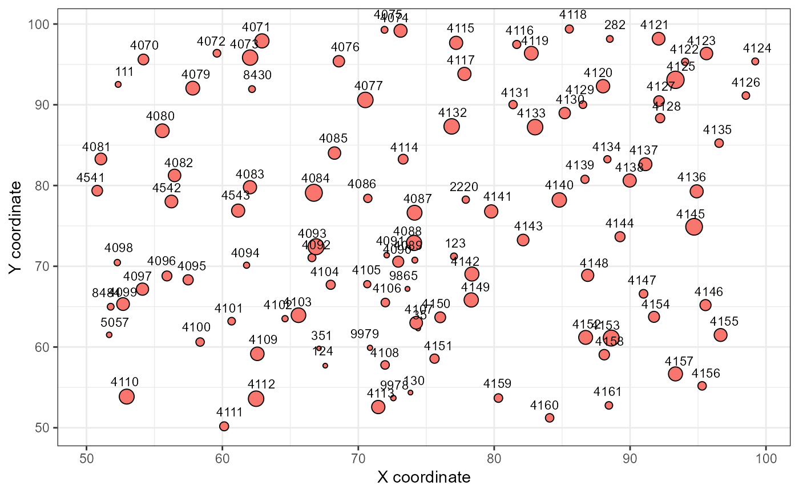

Creates a map of the forest stand where each tree is a point, sized relative
to its most recent diameter at breast height (dbh) measurement. Trees for
which dbh data is missing from dbh_data will be plotted in blue
instead of the standard red and assigned a size equal to mean dbh in the
stand. Points can optinally be labeled using a column included in
map_data, such as tag numbers of the trees.
stand_map(map_data, dbh_data, x_limit, y_limit, labels = NULL)
| map_data | Data frame of tree coordinates. Must include the columns:
|
|---|---|
| dbh_data | Data frame of tree measurement data. Must include the
columns: |
| x_limit | Numeric vector of length two indicating the x coordinate range to be included. |
| y_limit | Numeric vector of length two indicating the y coordinate range to be included. |
| labels | Name of column in |
Stand map will be plotted in the plotting window.
The x and y limits of the stand map can be specified because if a large stand (>50m in width or length) is mapped all at once the labels probably will not be readable.
library(dplyr) # Isolate mapping and tree data for one stand one_stand_map <- mapping %>% filter(stand_id == "AB08") one_stand_tree <- tree %>% filter(stand_id == "AB08") # Create map of one quarter of the stand using tag numbers as labels stand_map(one_stand_map, one_stand_tree, c(50, 100), c(50, 100), "tag")